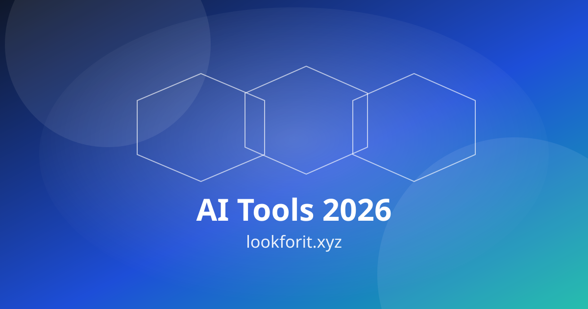

ChatGPT - AI assistant for writing and ideation.
Best AI Website Builders 2026: Framer, Lovable and Durable
The category has split in two: flat-rate builders for marketing sites, and credit-based builders that write real code. Picking from the wrong lane is the expensive mistake.
Published November 2026
AI website builders have matured fast. In 2026, you can describe a business in a sentence and get a live site the same afternoon, or describe an app and get working code you can host anywhere. The comparisons published in October 2026 all reach the same conclusion: this is now two categories, not one, and picking from the wrong one is the expensive mistake.
Traditional builders — Framer, Wix, Durable, Hostinger — generate marketing pages and charge a flat monthly fee. Prompt-to-app builders — Lovable, v0, Bolt.new — generate working software and charge by usage, sitting somewhere between no-code and real development. This guide compares both lanes on design control, code ownership, content depth and what the first genuinely usable paid tier costs, so you can pick by what you are building.
Prices below were checked against vendor pages in September and October 2026 by the comparison sites we reviewed. They change often, so confirm the current price before you buy.
Two Kinds of AI Website Builder
Flat-rate marketing builders generate pages, copy and images from a short prompt, then let you refine them on a visual canvas. You pay a monthly fee, the site lives on their platform, and you get hosting, a domain connection and a content system in one bill. They are the right choice for a portfolio, a business site, a landing page or a small store. Framer, Wix, Durable and Hostinger live here.
Credit-based prompt-to-app builders write real code — almost always React or Next.js — from your prompt. You get a codebase you can export, sync to GitHub and host anywhere. You pay by credits or messages, so every "actually, make the hero smaller" costs something. They are the right choice when the site is really a product: a tool, a dashboard, a booking flow with custom logic. Lovable, v0 and Bolt.new live here.
The mistake is to compare them on the same scorecard. A no-code builder cannot do what a code-generating tool does, and a code-generating tool is the wrong way to build a simple brochure site. Decide the lane first, then compare inside it.
The Shortlist
Lovable — best overall for prompt-to-app builds. Lovable is the pick when the website is really a product. One prompt produces a React frontend, and the platform handles the database and login flow for a working full-stack app. It offers real code export and GitHub sync, with a free tier of about five credits a day before Pro at $25 a month. In an identical-brief test of seven builders, it scored highest overall at 9.1 out of 10, with the strongest generation quality. The weakness is cost predictability: the credit system means an ambitious app can burn through a monthly allowance fast. Explore it on our Lovable tool page.
Framer — best design control. Framer is the most polished route from a prompt to a good-looking live site without code. AI drafts pages and copy from a short prompt, you refine on a design canvas with real breakpoints and scroll animation, then publish to a global content delivery network with a built-in content system. Basic starts at $10 a month per site on annual billing, with a free tier on a Framer subdomain. In testing it scored 9.5 on design control, the single highest sub-score any tool earned on any dimension. The trade-off is that you do not own the code. See our Framer AI tool page.
Durable — best speed for a small-business site. Durable's pitch fits in one sentence: answer three questions, get a business website in about 30 seconds. It targets the plumber, the studio or the solo consultant who needs a credible site today, and it bundles a customer system and invoicing so the site is also where leads land. Pricing sits at roughly $12 to $15 a month after the free trial, with a Launch plan at $25 a month on monthly billing. That bundle, not the design, is the reason to pick it. See our Durable tool page.
v0 by Vercel — best for React developers who want to own the code. v0 turns prompts into React components you can edit, export and host anywhere. It starts with free credits, with paid plans from around $20 a month. It is the pick when you can read the code it writes and want to keep it.
Bolt.new — fastest prompt to a deployed minimum viable product. Bolt.new gives free tokens monthly, with Pro at $25 a month, and deploys what it builds. It suits fast prototypes and hackathon-style builds where speed matters more than polish. See our Bolt.new tool page.
Wix — best all-in-one for small business. Wix has the deepest feature set in one platform: store, blog, booking and apps, with Light from $17 a month on annual billing. Several advanced features — booking calendars, live chat, multilingual support — are sold as separate app subscriptions on top of the base plan, so budget for those.
Hostinger AI Builder — best budget all-in-one. Hostinger starts at $2.99 a month on promotion, $10.99 on renewal, with hosting, domain and email bundled. It is the cheapest route to a live site with everything included. For design work around the site, Canva AI covers the visuals.

Pick by What You Are Building
Design-led marketing site or portfolio: Framer. Nothing touches its canvas, and the AI draft is genuinely good. Start on the free tier and pay when you connect a custom domain.
Small-business site with bookings and leads: Durable for speed, Wix for depth, Hostinger for budget. Durable wins when you want a site today; Wix wins when you need a store and a blog as well.
An app, a tool or a product with logins and a database: Lovable, v0 or Bolt.new. These build working software, not pages. Budget credits, not just the monthly fee, and expect to iterate.
A client site you will hand over: Framer for marketing sites, Lovable for apps. Both produce something a client can own and edit without you.
If you are building for clients, our guide for freelancers using AI tools covers the workflow around delivery, and the best AI tools for small business guide covers the stack around the site.
What the Free Tier Really Gives You
Free tiers are for testing, not for launching. Lovable gives about five free credits a day, which is enough to test a build but not to finish one. Framer's free tier publishes on a Framer subdomain, which is fine for a portfolio draft and wrong for a business. Wix's free plan also sits on a subdomain. Bolt.new gives free tokens monthly. In every case, a custom domain, removal of platform branding and a real launch need a paid plan. Use the free tier to answer one question: does this tool build the site I need? If yes, pay. If no, try the next one before you invest a week.
Code Ownership and Leaving Later
This is the decision that matters most after price. Prompt-to-app builders hand you a codebase you can take with you. If Lovable or v0 shut down tomorrow, your code still exists. No-code builders keep the site on their platform: you can export content, but not the site itself. That is a fair trade for a marketing site, where the content is the asset. It is a bad trade for a product, where the code is the asset. Before you build, ask one question: if I leave this platform in a year, what do I keep? If the answer is "the content", a no-code builder is fine. If the answer must be "the code", pick the prompt-to-app lane.
A Launch Checklist
Before you publish, run this list. One, connect a custom domain and check the site loads on a phone over mobile data. Two, write the real copy: AI drafts are a starting point, not a finished page. Three, add your contact details, address and policies — a site without them does not convert. Four, check the free tier limits you will hit first, usually credits or content collections. Five, set up analytics and a contact form that actually reaches you. Six, if the site takes bookings or payments, test a real booking end to end. For the wider free-tool stack, our guide to the best free AI tools covers what costs nothing, and AI tools for social media creators covers the promotion side once the site is live.
Rich Media: Watch and Adapt
Use this embed slot for topical explainers, walkthroughs, or expert clips. Rich media can improve comprehension and session depth when used to clarify frameworks rather than distract from the article's purpose.
When adding video, keep these rules simple: summarize key points above the embed, add a text-based action checklist below it, and connect viewers to your next internal step. For example, point readers to small business tool selection, freelancer workflows, or free tools based on intent stage.
FAQ
1) What is the best AI website builder in 2026?
There is no single best builder. Framer wins for design-led marketing sites, Lovable for prompt-to-app builds with real code, Durable for the fastest small-business site, and Hostinger for the lowest price. Pick by what you are building, not by the leaderboard.
2) Can I own the code from an AI website builder?
It depends on the lane. Prompt-to-app builders such as Lovable, v0 and Bolt.new hand you a real codebase, usually React or Next.js, that you can host anywhere. No-code builders such as Framer, Wix and Durable keep the site on their platform, so you can export content but not the site itself.
3) How much does an AI website builder cost?
Flat-rate builders start at about $10 to $17 a month: Framer Basic from $10 a month, Wix Light from $17 a month on annual billing. Prompt-to-app builders charge by credits, with Lovable Pro from $25 a month and Bolt.new Pro from $25 a month. Hostinger's AI Builder starts at $2.99 a month on promotion. Prices were checked against vendor pages in September and October 2026.
4) Is there a free AI website builder?
Yes, with limits. Lovable gives about five free credits a day, Framer has a free tier on a Framer subdomain, Wix has a free plan on a subdomain, and Bolt.new gives free tokens monthly. Free tiers are for testing; a custom domain and a real launch need a paid plan.
5) How fast can an AI website builder launch a site?
Durable turns three answers into a live site in about 30 seconds. Framer and Lovable take longer because you refine the design and the content, but a first draft still arrives in minutes. Budget an afternoon for a real launch, not five minutes.
Related Articles
- Best AI Tools for Small Business in 2026
- How Freelancers Can Use AI Tools in 2026
- Best Free AI Tools in 2026
- AI Tools for Social Media Creators in 2026
Final Takeaway
The best AI website builder is the one in the right lane. For a marketing site or portfolio, Framer gives the best design and control from $10 a month. For a business site today, Durable is the fastest route and Wix the deepest. For an app with real logic, Lovable, v0 or Bolt.new hand you code you own. Start on the free tier, build the real site — not a demo — and check the price, the credit burn and the exit path before you pay. The site that launches is worth more than the builder that impresses.